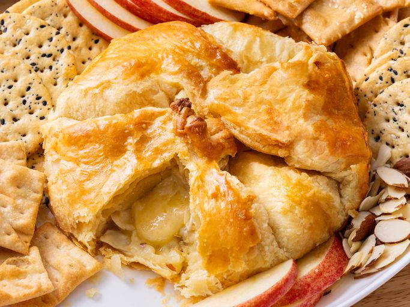

Baked Brie in Puff Pastry Recipe

Description
This baked Brie recipe is simple to make with a wheel of brie cheese wrapped in golden puff pastry. It's so good served hot out of the oven and won't last long on your holiday table! Serve this gooey cheesy appetizer with your favorite crackers or sliced crusty bread on the side.
Ingredients
- 1 sheet frozen puff pastry, thawed
- 1 (8 ounce) wheel Brie cheese
- ¼ cup sliced almonds
Steps
- Gather all ingredients. Preheat the oven to 350 degrees F (175 degrees C). Lightly grease a 9-inch pie pan.
- Slice Brie cheese in half horizontally into two flat wheels.
- Place puff pastry into the prepared pie pan. Place one wheel of Brie onto the pastry dough with the rind facing down. Sprinkle almonds evenly over Brie.
- Top with the remaining wheel, with the rind facing up.
- Bundle puff pastry around Brie and pinch the ends together to seal.
- Bake in the preheated oven for 15 to 20 minutes. Let cool for 5 minutes before serving.